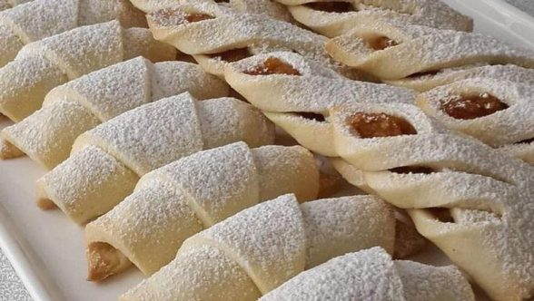

Nefis Elmalı Kurabiye

Merhaba
Sizlerle yapımı çok kolay keyifle yiyebileceğiniz bir kurabiye tarifi paylaşacağım.
Elmalı kurabiyeyi çocuklarınız çok beğenecek.
Misafirleriniz lezzetli kurabiyenin tarifi sizlerden hemen isteyecekler.
Tarif: Yasin KOÇ
Elmalı kurabiyenin elmalı harcı nasıl yapılır?
Elmalı kurabiye tarifini hazırlamak için rendelenmiş elmaları tavaya alın.
Üzerine toz şekeri ekleyin ve elmalar karamelize olana kadar pişirin.
Elmalı harç piştikten sonra üzerine yarım su bardağı kadar dövülmüş ceviz ve tarçın ekleyin, karıştırın.
Elmalı kurabiye hamuru nasıl yapılır?
Elmalı kurabiye hamuru için yoğurma kabına oda sıcaklığındaki tereyağı veya margarini alalım.
Üzerine yoğurt, yumurta ve pudra şekerini alalım. Malzemeleri elimizde güzelce karıştıralım.
Daha sonra vanilya, kabartma tozu ve unu yavaş yavaş ekleyerek hamuru yoğurmaya başlayalım.
Yuvarlak şekiller çıkarıp elmalı harcı ortasına koyun ve iki yandan katlayın.
Pişirme kağıdı serdiğiniz fırın tepsisine kurabiyeleri dizin ve önceden ısıtılmış 180 derece fırında üzeri kızarana kadar,
yaklaşık 20-25 dakika pişirin.